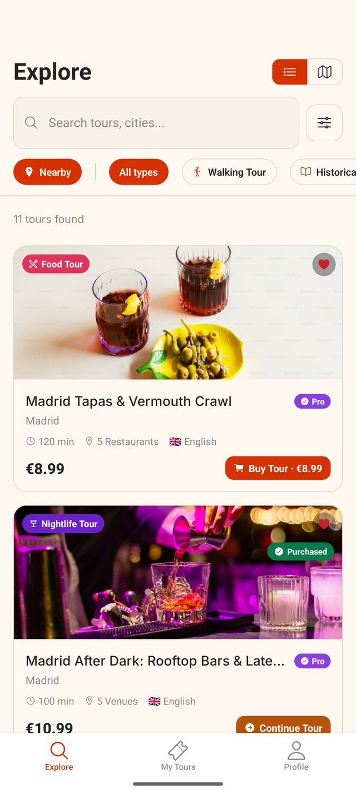
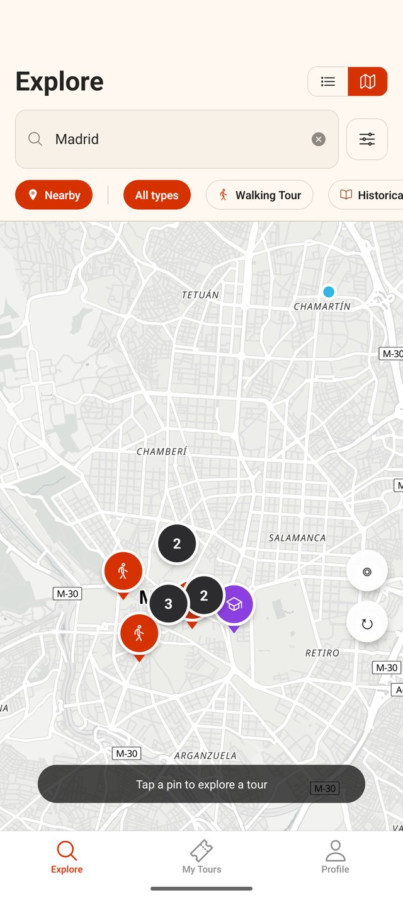
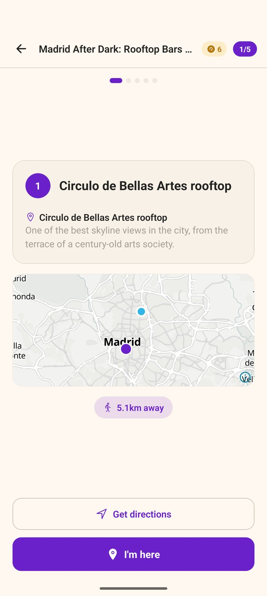
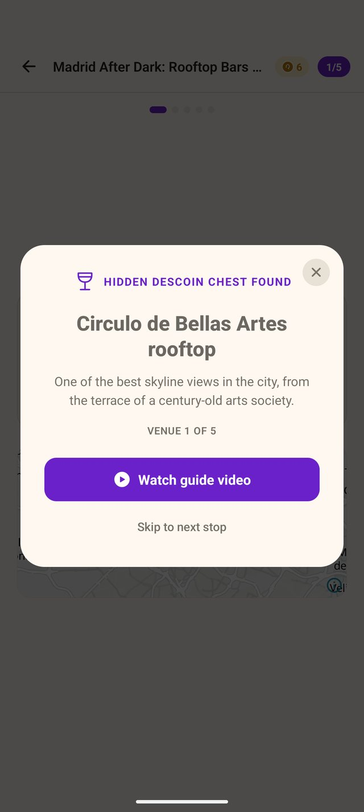
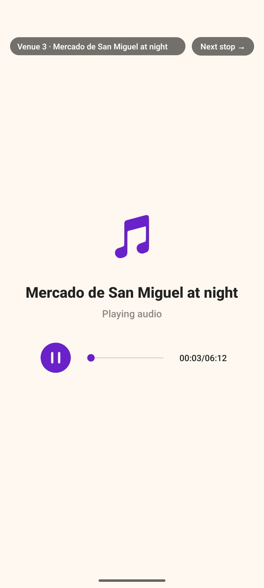
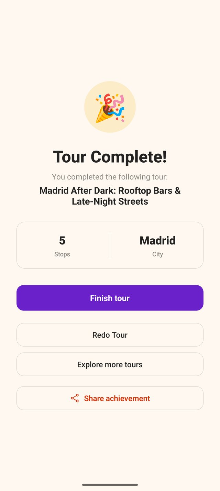
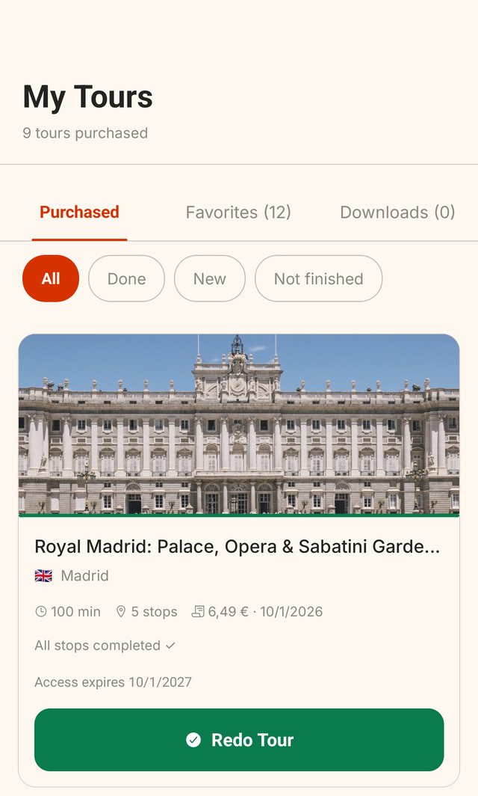
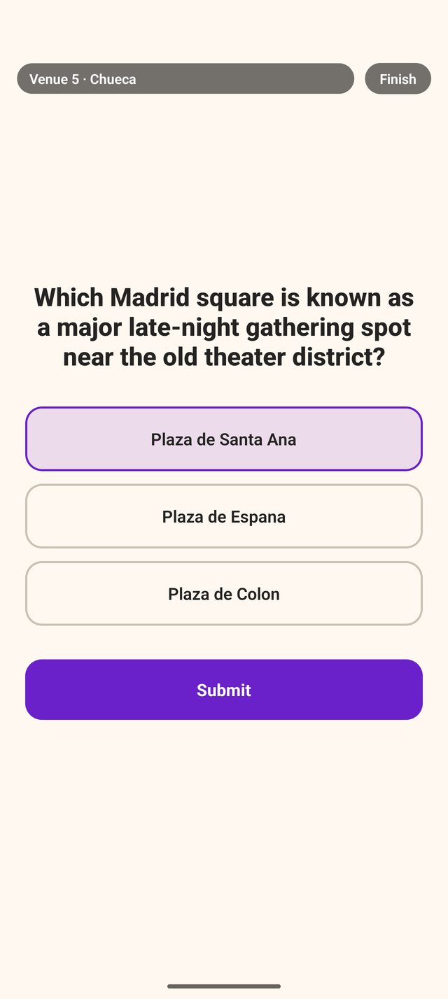
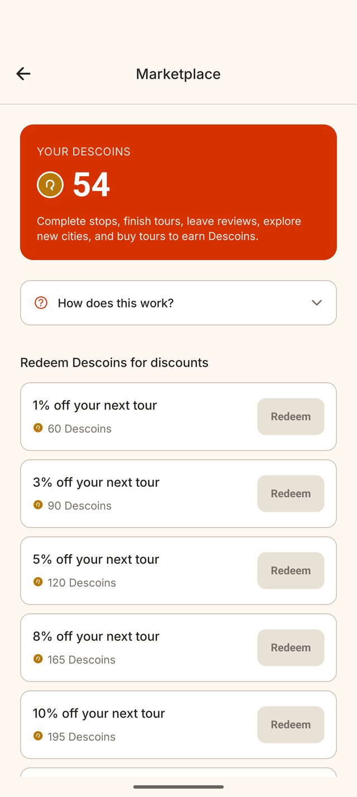
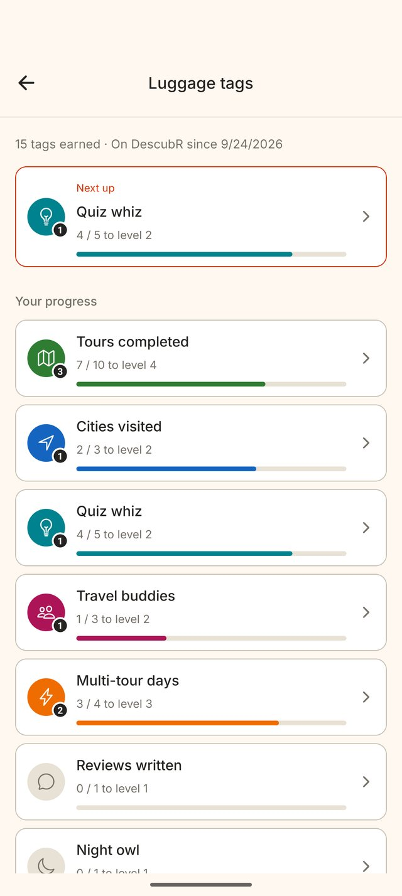

Self-guided tours, from people who actually know the place
Pick a tour, walk the route and unlock video, audio and stories at every stop. No group to keep up with and no schedule to stick to.
Tours autoguiados, creados por quienes realmente conocen el lugar
Elige un tour, recorre la ruta y desbloquea vídeo, audio e historias en cada parada. Sin grupo al que seguir ni horario que cumplir.
- Free to downloadDescarga gratis
- First stop of every tour freeLa primera parada de cada tour es gratis
- Works offlineFunciona sin conexión

A guided tour that fits around your day Un tour guiado que se adapta a tu día
All the stories of a good local guide, on your phone, whenever you feel like walking. Todas las historias de alguien que conoce bien el lugar, en tu móvil, cuando te apetezca salir a caminar.
Go when you want
Start at nine in the morning or nine at night. Stop for a coffee and pick up where you left off.
Ve cuando quieras
Empieza a las nueve de la mañana o a las nueve de la noche. Para a tomar algo y sigue donde lo dejaste.
Made by locals
Every route is written by someone who knows those streets, and our team reviews it before it goes live.
Creado por gente del lugar
Cada ruta la crea alguien que conoce bien esas calles, y nuestro equipo la revisa antes de publicarla.
Try before you pay
The first stop of every tour is free, so you know exactly what you're getting.
Prueba antes de pagar
La primera parada de cada tour es gratis, así sabes exactamente lo que vas a comprar.
No signal, no problem
Download a tour before you head out. Video, audio and the map of the area keep working offline.
Sin cobertura, sin problema
Descarga el tour antes de salir. El vídeo, el audio y el mapa de la zona siguen funcionando sin conexión.
From the map to the last stop Del mapa a la última parada
This is what a tour looks like on your phone. Así se ve un tour en tu móvil.

Find a tour near you
Open the map and see the tours around you, wherever you are. Filter by food, history, art, nightlife and more.
Encuentra un tour cerca de ti
Abre el mapa y mira los tours que tienes alrededor, estés donde estés. Filtra por gastronomía, historia, arte, ocio nocturno y más.

Walk to the first stop
The app shows you where the stop is and how far you have left. Prefer your usual maps app? One tap opens directions there.
Camina hasta la primera parada
La app te muestra dónde está la parada y cuánto te queda. ¿Prefieres tu app de mapas de siempre? Un toque y te abre la ruta allí.

Unlock what's waiting there
When you arrive, you find a hidden Descoin chest. Inside is the guide's video, an audio story, a short read or a quiz about that exact spot.
Desbloquea lo que te espera
Al llegar encuentras un cofre oculto de Descoins. Dentro está el vídeo del guía, una historia en audio, un texto corto o un reto sobre ese mismo lugar.

Listen, watch and look around
Stories you won't find on a plaque, told by someone who knows them. Put your headphones in and keep your eyes on the street.
Escucha, mira y descubre
Historias que no vienen en ninguna placa, contadas por quien las conoce. Ponte los auriculares y no pierdas detalle de la calle.

Finish, then do it again
Tick off every stop and keep the tour for a whole year. Walk it again with friends, or redo it at night for a different city.
Termínalo y repítelo
Completa todas las paradas y quédate el tour durante un año entero. Vuelve a hacerlo con amigos, o repítelo de noche y verás otra ciudad.
Your tour keeps going when the signal doesn't
Old town alleys, underground markets, a phone on roaming: tap download before you leave and the whole tour comes with you.
- Video, audio and texts saved on your phone
- The map around every stop, readable offline
- Each stop's address, so you can always ask the way
- Your progress syncs as soon as you're back online
Tu tour sigue aunque se vaya la cobertura
Callejones del casco antiguo, mercados subterráneos, el móvil en itinerancia: pulsa descargar antes de salir y el tour entero va contigo.
- Vídeo, audio y textos guardados en tu móvil
- El mapa alrededor de cada parada, también sin conexión
- La dirección de cada parada, para que siempre puedas preguntar cómo llegar
- Tu progreso se sincroniza en cuanto vuelves a tener conexión

Explore more, pay less Explora más, paga menos
Stops, quizzes, reviews and new cities all earn Descoins. Swap them for discounts on your next tour and collect luggage tags along the way. Las paradas, los retos, las reseñas y las ciudades nuevas suman Descoins. Cámbialos por descuentos en tu próximo tour y colecciona etiquetas de equipaje por el camino.



Better with friends. Share your code from the app. When someone signs up with it and buys their first tour, you both earn Descoins.
Mejor en compañía. Comparte tu código desde la app. Cuando alguien se registre con él y compre su primer tour, ganaréis Descoins tanto tú como esa persona.
A tour for every kind of curiosity Un tour para cada tipo de curiosidad
Tapas crawls, royal palaces, street art, ghost stories after dark. Pick the city and the mood. Rutas de tapas, palacios reales, arte urbano, historias de fantasmas al caer la noche. Elige la ciudad y el plan.
Know a place inside out? Turn it into a tour.
Record videos, write the stories, add a quiz or two and set your own price. Travelers buy your tour from anywhere in the world, and you earn every time. Becoming a guide is free and there's no application to fill in.
¿Conoces un lugar a fondo? Conviértelo en un tour.
Graba vídeos, escribe las historias, añade algún reto y pon tu propio precio. Gente de todo el mundo puede comprar tu tour, y ganas cada vez que alguien lo hace. Hacerte guía es gratis y no hay que rellenar ninguna solicitud.
Before you download Antes de descargar
Is the app free?
Downloading DescubR is free on iPhone and Android. Each tour has its own price, set by the guide who made it, and the first stop of every tour is free to try.
Do I need an internet connection during a tour?
Not if you download it first. A downloaded tour keeps its video, audio and the map around its stops on your phone, so you can walk it with no signal.
How long can I use a tour after buying it?
A tour stays in your account for 365 days, and you can walk it as many times as you like in that time.
Where are the tours?
We're starting in Spain, with Madrid leading the way, and growing across Europe. Guides can publish a tour for any place in the world, so open the map wherever you are and see what's nearby.
¿La app es gratis?
Descargar DescubR es gratis en iPhone y Android. Cada tour tiene su propio precio, fijado por quien lo creó, y la primera parada de cada tour se puede probar gratis.
¿Necesito conexión a internet durante el tour?
No, si lo descargas antes. Un tour descargado guarda en tu móvil su vídeo, su audio y el mapa de la zona de sus paradas, así que puedes recorrerlo sin cobertura.
¿Cuánto tiempo puedo usar un tour después de comprarlo?
El tour se queda en tu cuenta durante 365 días, y puedes recorrerlo tantas veces como quieras en ese tiempo.
¿Dónde hay tours?
Empezamos en España, con Madrid a la cabeza, y vamos creciendo por Europa. Cada guía puede publicar un tour de cualquier lugar del mundo, así que abre el mapa estés donde estés y mira qué tienes cerca.
Your next walk is already in your pocket Tu próximo paseo ya está en tu bolsillo
Download DescubR, try the first stop of any tour for free and head out when it suits you. Descarga DescubR, prueba gratis la primera parada de cualquier tour y sal cuando te venga bien.